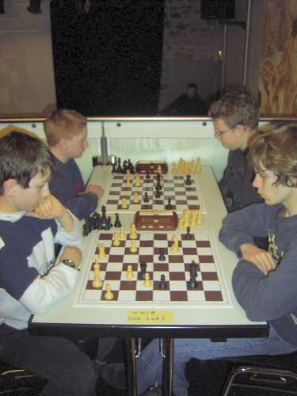
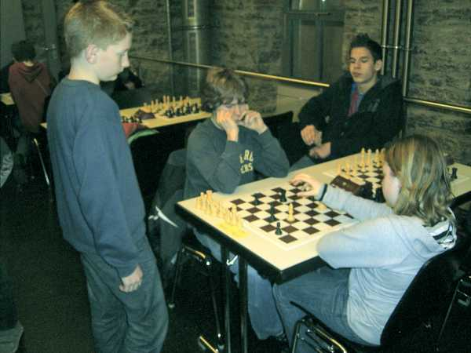

Beim Warmspielen im Alten Wasserwerk Lörrach


Beim Lokalderby: Tobias gegen Jochen

"Bitte nicht forografieren!"

Lukas und Nicolas kämpften in der U14

Marvin und Lukas bewundern Nicolas beim Siegen

Auch hier wieder der Klassiker: Jochen gegen Gregor Haag

Das Alte Wasserwerk war gut gefüllt...